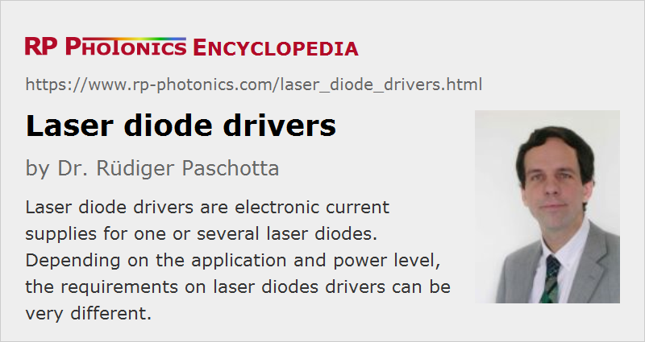

Laser Diode Drivers
Definition: electronic current supplies for one or several laser diodes
Alternative term: laser diode controllers
German: Laserdiodentreiber
Categories: photonic devices, lasers
How to cite the article; suggest additional literature
Author: Dr. Rüdiger Paschotta
Laser diodes drivers are electronic devices which are used to supply one or several laser diodes with the required electrical drive current. Most of them obtain electrical power from the public grid, but there are also battery-operated devices.
Basic Functionality
In many cases, a diode driver simply needs to supply a constant operation current, resulting in continuous-wave operation of the laser with approximately constant optical output power. Due to the highly nonlinear voltage–current characteristics of laser diodes with a low differential impedance (high dI/dV) (see Figure 1), which also significantly depend on the junction temperature, it is usually not sufficient to apply a certain constant voltage; instead, the electrical current needs to be stabilized by automatically adjusting the applied voltage. This constant current mode is the function of a so-called current source. For increasing device temperature, the curve in Figure 1 is shifted to the right; one then requires a lower voltage for the same current. If one would instead keep the voltage constant, the current could rise substantially, which would further increase the junction temperature. This might even result in a run-away situation, where the laser diode is destroyed, if the current is not limited.
Note that the drive current and not the voltage determines the rate with which electrical carriers are injected into the junction of the laser diode. Therefore, the optical output power is strongly linked to the drive current and less directly to the drive voltage.
For preventing damage of a laser diode, it is important to avoid any excessive drive currents; even short current spikes could destroy a laser diode, e.g. in the form of catastrophic optical damage due to excessive optical intensity as the diode's output facet. Particularly if a laser diodes driver is not made for diodes with a specific maximum drive current, it should have a separate control where the maximum drive current can be adjusted, and the limit set there should be respected by any other controls, e.g. the one which is regularly used to adjust the drive current. (When the current limit is reached, the current may either be clamped to the limit value or switched off until the user reactivates the device e.g. by pushing a button.) In that way, one can greatly reduce the risk that a user accidentally draws the power knob too far; special care has to be applied only when the current limit is set.
In some cases, laser diodes are intentionally overdriven, i.e., operated with a drive current above the recommended maximum. In that way, one may achieve an increased output power, but at the cost of a reduced laser lifetime, and possibly even with the risk of instant damage.
Obviously, a laser diode driver should be relatively immune against external influences such as voltage spikes on the electrical grid or current transients resulting from faulty electrical contacts.
Different Power Levels
Laser diodes and therefore also laser diodes drivers are available in a very wide range of powers. Some low-power diodes require drive currents of only e.g. 20 mA, whereas high-power diode bars may be operated with drive currents of dozens of amperes. In case of high-power diode drivers, it is of interest to have a switching power supply and related control electronics with high power conversion efficiency – not only in order to save electricity, but also to limit the amount of waste heat which normally needs to be dissipated with additional means such as a ventilator or a water cooling system.
If the system contains multiple laser diodes, one in principle use a separate driver for each one. However, as long as independent power control of these diodes is not required, it is simpler, more convenient and more economical to operate multiple diodes with a single diode driver. Usually, the laser diodes are connected in series, since this guarantees that they are all operated with the same drive current; if they would be connected in parallel, the hottest diode may consume the largest part of the current and thus become even hotter. Also, parallel connections could lead to excessive drive currents in the electrical cables and connectors, also to a reduced efficiency of the driver, whereas higher voltages are often not a problem. For cases with a very large number of laser diodes, one may group the diodes into packages where there is a serial connection of the diodes within each package, and the different packages are driven by separate output stages of the driver (with separate current stabilization). Obviously, the via ring of the used laser diodes (e.g. common cathode or common anode) must fit to the connections of the used laser diode driver.
It is often advisable not to use a laser diode driver which is designed for a much higher drive current than required. Even if a proper current limit can be set, the accuracy of the set operation current may otherwise be worse, the current noise may be higher, and the transient protection may be not sufficiently sensitive for a low-power diode.
Additional Functionality
Beyond the mentioned basic functionality, laser diodes drivers can offer a number of additional functions:
Interlock Systems
Very often, a diode driver has some interlock system, which can switch off the laser in case that a certain safety condition is detected – for example, and opened device housing. It can be very useful to have multiple interlock connections for implementing advanced safety features. Some of them may treat conditions like insufficient coolant flow on a chiller in order to avoid hardware defects.
Constant Power Mode
There are devices which can stabilize the optical output power (constant power mode), based on a signal from the photodetector, which may be integrated into the laser diode package. (That is particularly often the case for fiber-coupled laser diodes.) Of course, a certain maximum drive current must never be exceeded; otherwise, a laser diode could be killed as a result of a faulty photodetector signal. Often, it is possible to switch between constant current mode and constant power mode.
Electrical Monitoring Outputs
There may be electrical outputs, e.g. delivering a voltage proportional to the laser diode current or the monitored optical power, possibly with a calibration feature.
Protective Features
The applied voltage should be monitored, and if an unusual operation voltage is detected, the device may switch off the diode in order to prevent damage. If several laser diodes are operated in series, a sudden drop of the voltage may indicate the death of one of the diodes, and it may then be wise to investigate the situation before the other laser diodes are also destroyed. Also, it is useful if the driver recognizes wrong poling of a diode, because it could be destroyed by an excessive reverse voltage.
For transient protection, the diode's cables should not simply be disconnected when switched off, but rather electrically connected together (shorted), so that electrostatic discharges cannot build up a voltage across the pins.
Temperature Control and Monitoring
Some devices have an integrated temperature controller, driving e.g. a Peltier element based on the signal of some temperature sensor. Even without a temperature stabilization feature, it can be useful to monitor the junction temperature for switching off the laser before it gets too hot. Alternatively, one may monitor the emission wavelengths, which reacts sensitively to temperature changes, unless an optical wavelength stabilization is used, e.g. based on optical feedback from a volume Bragg grating.
Also, it is sensible to monitor the internal temperature of the electronic driver device, since overheating e.g. due to a blocked air or water flow may destroy the driver and possibly the laser diode(s) in addition.
Low-noise Operation
Some drivers are made for operation with a particularly low current noise. This can be important, for example, when driving lasers for sensitive optical measurements. Low-noise operation is mostly offered for low-power devices.
Slow Start Feature and Turn-on Delay
Particularly for high-power laser diodes, it can be useful to limit the rate with which the current can be ramped up and down (slow start feature), because this reduces the internal mechanical stress related to temperature changes. In addition, a turn-on delay is often used as a safety feature; people in the room are warned about coming laser radiation before it is actually turned on.
Wavelength Tuning
Some diode lasers, in particular external-cavity diode lasers, are suitable for wavelength tuning in a substantial range. For example, a diffraction grating on a motorized stage can be used for controlling the emission wavelength. Some laser diodes drivers contain functionality for tuning the wavelength e.g. via controlling some stepper motor.
Quasi-continuous Wave Operation
Some drivers are suited for quasi-continuous-wave operation (QCW mode). This means that they can apply current pulses with an adjustable duration e.g. between 1 μs and 10 ms, which can be triggered with an external electric signals or with a built-in clock. The possible peak current may be well above the current which the driver could deliver continuously, or which the laser diode could tolerate continuously.
Short and Ultrashort Pulse Generation
They are specialized drivers for producing nanosecond or picosecond pulses, e.g. by gain switching. Here, it is particularly important to select a suitable laser diode and to properly adjust the parameters of the applied current pulses.
Current Modulation
In other cases, a laser diode driver allows some other kind of modulation of the supplied current. This can be done in many different forms. For example, a TTL input signal may be used to switch the current on or off. In other cases, an analog input signal is added to the base current set with the controls. Drivers can differ very much in terms of modulation bandwidth and depth of modulation.
Current modulation is often available only in current control mode, i.e., not in combination with output power stabilization. This is because the limited feedback bandwidth of the stabilization circle it would strongly limit the possible modulation bandwidth.
Computer Control
A diode driver may be computer-controlled, connected e.g. via a USB, GPIB or a serial interface like RS-232. It may receive inputs, e.g. concerning the requested drive current, and deliver outputs, e.g. concerning the achieved optical output power or the required diode voltage.
Different Types of Diode Drivers
Some laser diodes drivers are made as instruments specifically for use in laboratories. Here, the user usually has direct access to the device and its controls, which usually include various knobs, buttons and switches, e.g. for adjusting the diode current or temporarily switching it off. Laboratory diode drivers usually have a front panel with a digital display for the diode current, possibly also for other quantities like the applied voltage or the diode temperature, if the latter can be measured with a built-in temperature sensor. Such devices are often not built for a specific type of laser diode, but with increased flexibility for using different diodes. This implies that different maximum voltages and currents can be applied.
Some devices have a standardized housing for mounting in a rack, where they can be combined with other electronic devices.
Finally, there are driver modules for integration into other devices (e.g. mounted on a chassis heat sink) and sold as OEM packages, if not produced by the manufacturer of the system. They often have only electronic interfaces for interaction with other parts of the system electronics, and not directly with the user of the laser device. They are often used in larger quantities and available at lower prices.
Further Remarks
Laser diodes are generally not suitable for “hot plugging”: they should be connected or disconnected only while the diode driver is switched off, and proper precautions have to be taken to avoid damage by electrostatic discharge (ESD). For example, one may shorten the pins at the diode before disconnecting the wires from the driver.
Before using a diode driver within some larger system, one should check whether problems could arise due to improper grounding. Some diode drivers have one output pin connected to the case and to earth ground, and may then interfere with additional grounding on other devices. Even if the same pin is connected to earth ground at different locations, problems may result due to a “ground loop” in which magnetic fields can induce disturbing currents.
Suppliers
The RP Photonics Buyer's Guide contains 67 suppliers for laser diode drivers. Among them:
Questions and Comments from Users
Here you can submit questions and comments. As far as they get accepted by the author, they will appear above this paragraph together with the author’s answer. The author will decide on acceptance based on certain criteria. Essentially, the issue must be of sufficiently broad interest.
Please do not enter personal data here; we would otherwise delete it soon. (See also our privacy declaration.) If you wish to receive personal feedback or consultancy from the author, please contact him e.g. via e-mail.
By submitting the information, you give your consent to the potential publication of your inputs on our website according to our rules. (If you later retract your consent, we will delete those inputs.) As your inputs are first reviewed by the author, they may be published with some delay.
See also: laser diodes, diode lasers, laser safety
and other articles in the categories photonic devices, lasers
|  |
If you like this page, please share the link with your friends and colleagues, e.g. via social media:
These sharing buttons are implemented in a privacy-friendly way!